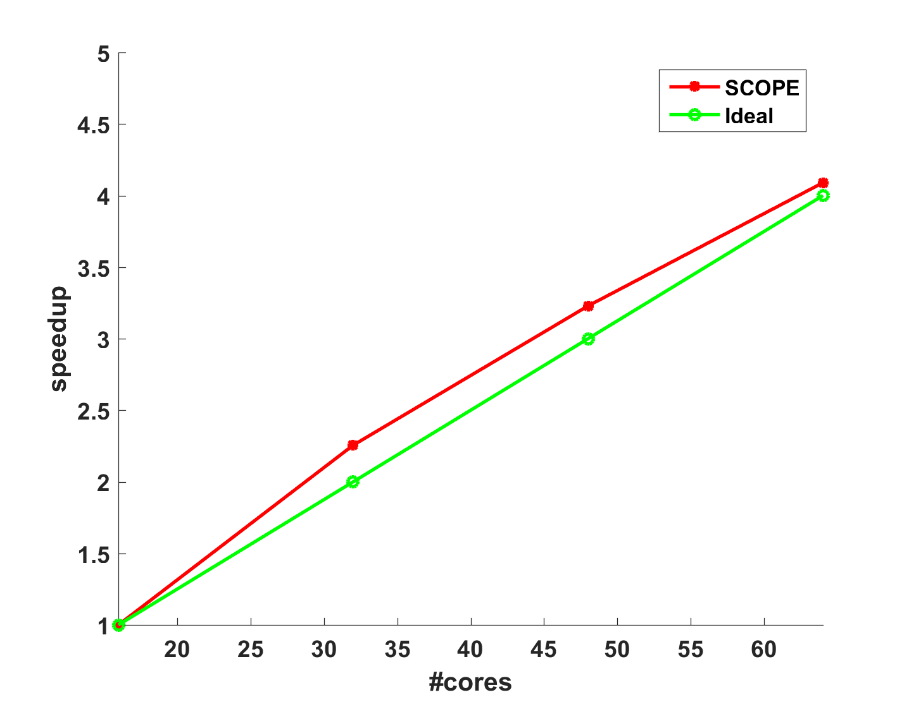

The main Learning Engine for LIBBLE is based on a distributed stochastic
optimization algorithm called SCOPE
(Scalable Composite OPtimization for
lEarning).
SCOPE is both computation-efficient and communication-efficient. Theoretical
analysis shows that SCOPE is convergent with linear convergence rate when the
objective function is strongly convex. Furthermore, empirical results on real
datasets show that SCOPE can outperform other state-of-the-art distributed
learning methods on Spark, including both batch learning methods and stochastic
learning methods.
Efficiency
To compare efficiency with state-of-the-art machine learning methods on Spark,
we choose logistic regression (LR) with a L2-norm regularization term to
evaluate SCOPE and other baselines. The result on MNIST-8M dataset is shown
below. We can find that SCOPE outperforms all the other baselines.

Speedup
The speedup is defined as follows:
} { (time\ with
\ 2x\ cores)}) .
And we choose
.
And we choose  .
The speedup result is shown below, where we can find that SCOPE has a
super-linear speedup, which might be reasonable due to the higher cache hit
ratio with more machines. The good speedup of SCOPE can be explained by the fact
that most training work can be locally completed by each Worker and SCOPE does
not need much communication cost.
.
The speedup result is shown below, where we can find that SCOPE has a
super-linear speedup, which might be reasonable due to the higher cache hit
ratio with more machines. The good speedup of SCOPE can be explained by the fact
that most training work can be locally completed by each Worker and SCOPE does
not need much communication cost.

Synchronization Cost
The following figure shows the synchronization cost, which contains both
communication time and waiting time. The synchronization cost of SCOPE is low
because most computation is completed locally and only a small number of
synchronization times is needed.

More detailed experiments can be found in the reference.